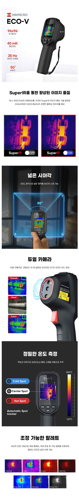
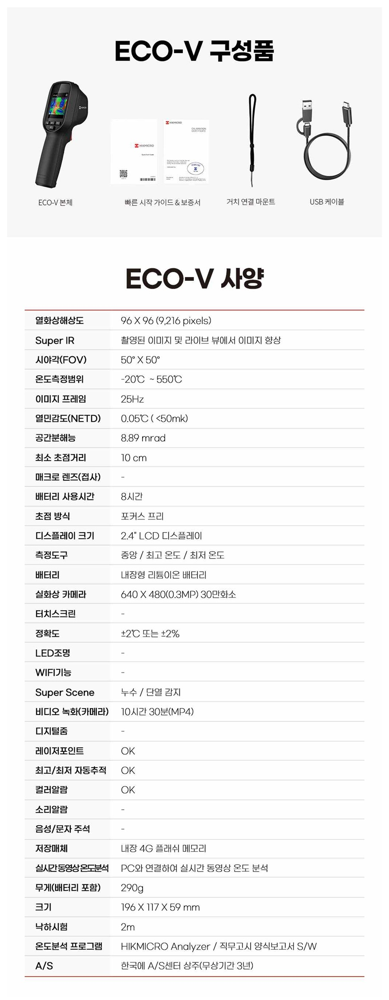
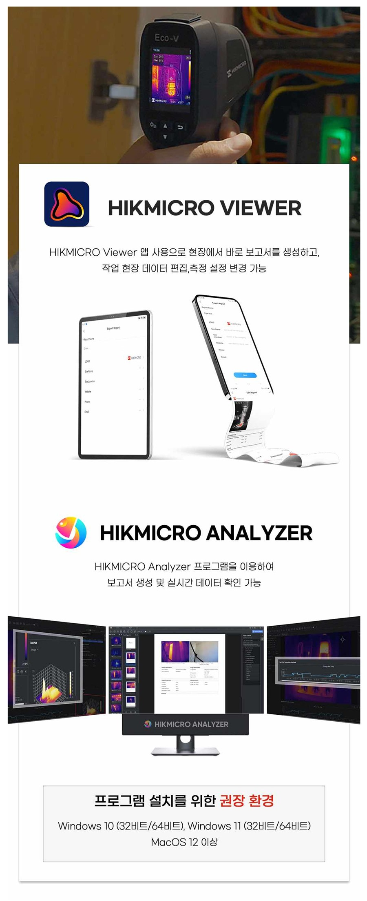

HIKMICRO ECO-V
제품 소개
HIKMICRO ECO-V는 ECO 시리즈 상위 모델로, 실화상 카메라를 더한 듀얼 카메라 구조와 SuperIR 이미지 향상 기술을 갖춘 합리적인 가격대의 휴대용 열화상카메라입니다. -20℃~+550℃의 넓은 온도범위를 지원하며, 누수·단열 감지에 특화된 Super Scene 모드로 다양한 현장에서 활용할 수 있습니다.
SuperIR 향상된 이미지 품질
96×96(9,216 화소) 해상도를 SuperIR 기술로 240×240(57,600 화소) 수준까지 선명하게 향상시킵니다.
넓은 시야각 · 듀얼카메라
50° 광각 시야와 실화상 카메라를 더해 Thermal · Visual · Fusion 3가지 이미지 모드를 제공합니다.
정밀 온도측정 · 자동추적
최고·최저·중앙 스팟을 자동으로 추적하며, 5가지 조정 가능한 팔레트를 지원합니다.
SuperIR · 넓은 시야각 · 듀얼카메라 · 정밀 온도측정 · 조정 가능한 팔레트
SuperIR 이미지 향상 기술로 더욱 선명한 열화상 이미지를 제공하며, 50° 광각 시야각으로 넓은 범위를 빠르게 스캔할 수 있습니다. 듀얼 카메라 구조로 IR·실화상·합성 이미지를 함께 확인할 수 있고, 최고/최저/중앙 스팟 자동추적과 5가지 팔레트로 원하는 형태의 열화상 이미지를 얻을 수 있습니다.

구성품 및 제품 사양
ECO-V 본체, 빠른 시작 가이드 및 보증서가 기본 제공되며 거치 연결 마운트와 USB 케이블이 함께 제공됩니다.
- ECO-V 본체
- 빠른 시작 가이드 & 보증서
- 거치 연결 마운트
- USB 케이블
- A/S 3년, 한국 A/S센터 상주

HIKMICRO Viewer / Analyzer 소프트웨어
HIKMICRO Viewer 앱으로 현장에서 실시간 이미지 확인, 스냅샷 캡처, 비디오 녹화 및 즉시 보고서 생성이 가능하며, PC용 HIKMICRO Analyzer 프로그램을 통해 정밀 분석 및 실시간 데이터 확인, 보고서 생성이 가능합니다.

사용자 매뉴얼
HIKMICRO ECO Lite / ECO-V 공통 사용자 매뉴얼(한글)을 다운로드하실 수 있습니다.